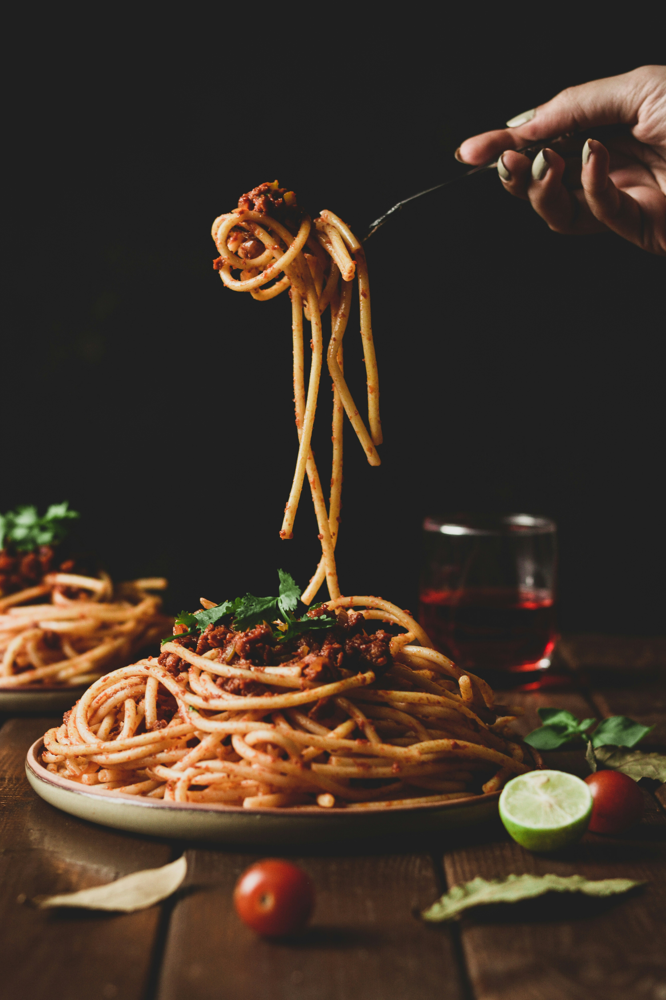

Home
Spaghetti Recipe

Description
An easy, comforting classic for any night of the week, this spaghetti recipe is sure to be one the whole family
will love, featuring a rich and hearty meat sauce simmered with a blend of herbs and spices. The sauce is made
from crushed tomatoes, savory ground beef, and aromatic garlic and red pepper flakes.
Ingredients
- 1 pound spaghetti noodles
- 1 pound lean ground beef
- 3 tablespoons olive oil
- 1 onion, chopped
- 3 cloves garlic, minced
- 2 tablespoons tomato paste
- 1/2 teaspoon oregano, dried
- 1/2 teaspoon red pepper flakes
- 1 cup chicken broth
- 1 28oz can crushed tomatoes
- Salt and pepper, to taste
- Fresh basil leaves & Parmesan cheese for garnish
Steps
- In a large pot, heat the olive oil over medium heat.
- Brown the meat, about 8 minutes.
- Add the onions and cook until soft, then add garlic, herbs and spices, and tomato paste. Cook for 1
minute.
- Add the chicken broth and crushed tomatoes, scraping the bottom of the pot to incorporate incorporate
the sauce. Simmer for 30 minutes; taste the sauce throughout and adjust the seasoning
accordingly.
- While the sauce simmers, bring another pot of salted water to a boil for the pasta.
- Cook the pasta according to the package directions, less 1-2 minutes from the suggested cooking time.
- Stir fresh basil into the sauce and pour over the pasta, tossing until fully incorporated.
- Serve topped with parmesan cheese.
Enjoy!